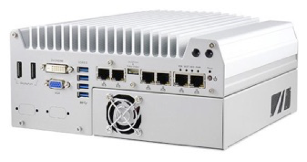
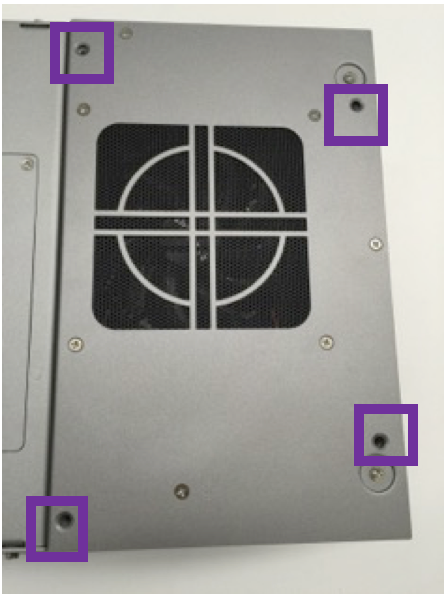
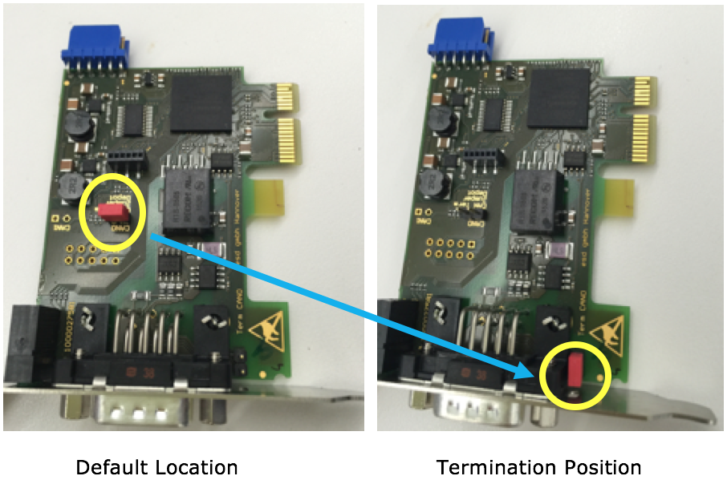
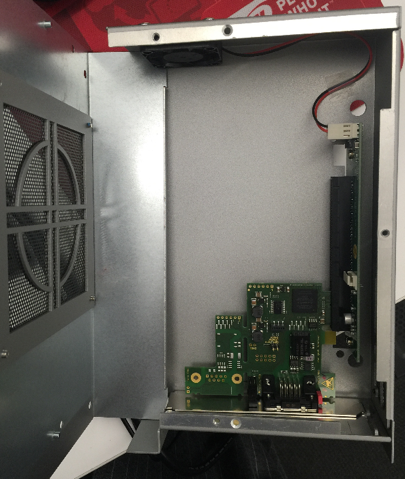
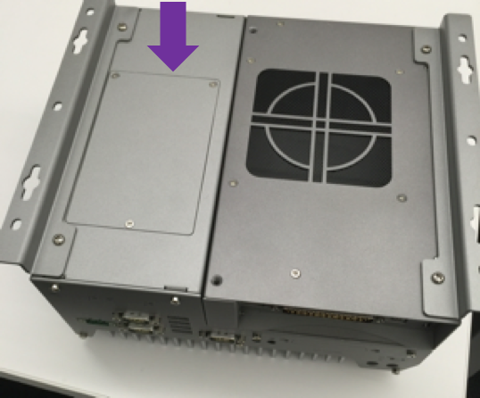
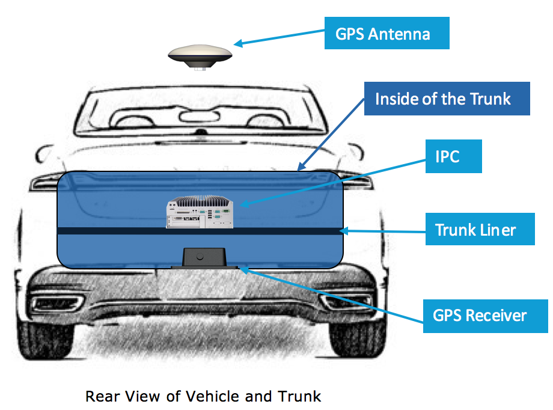

Apollo 1.0 Hardware and System Installation Guide¶
关于本篇指南¶
本篇指南提供了所有安装硬件部分和 Apollo 项目所需的教程。系统安装信息包括下载和安 装 Apollo Linux 内核的过程。
文档编写规则¶
下表列出了本文使用的编写规则：
图标 |
描述 |
|---|---|
加粗 |
强调。 |
|
代码, 类型数据。 |
斜体 |
文件、段落和标题中术语的用法。 |
|
信息 提供了可能有用的信息。忽略此信息可能会产生不可预知的后果。 |
|
提醒 包含有用的提示或者可以帮助你完成安装的快捷步骤。 |
|
在线 提供指向特定网站的链接，您可以在其中获取更多信息。 |
|
警告 包含 不能 被忽略的内容，如果忽略，当前安装步骤可能会失败。 |
引言¶
Apollo项目旨在为汽车和自动驾驶行业的合作伙伴提供开放，完整和可靠的软件平台。 该项目的目的是使这些企业能够开发基于 Apollo 软件栈的自动驾驶系统。
文档说明¶
以下文档适用于 Apollo 1.0:
[Apollo Hardware and System Installation Guide] ─ 提供用于安装车 辆的硬件部件和系统软件的教程:
车辆:
工业用计算机 (IPC)
全球定位系统 (GPS)
惯性测量单元 (IMU)
控制器局域网络 (CAN) 卡
硬盘
GPS 天线
GPS 接收器
软件:
Ubuntu Linux
Apollo Linux Kernel
[Apollo Quick Start Guide] ─ 文档和蓝图的组合提供了完整的端到端教 程。本文还提供了一些其它文档链接描述了如何将一辆普通汽车改装成一辆自动驾驶车辆 。
核心硬件部件¶
需要安装的核心硬件部件包括:
车载计算机系统 ─ Neousys Nuvo-5095GC
CAN 卡 ─ ESD CAN-PCIe/402-1
GPS 和 IMU ─ 可选项如下:
NovAtel SPN-IGM-A1
NovAtel SPAN® ProPak6™ and NovAtel IMU-IGM-A1
额外的部件¶
你需要额外的部件支持以下任务：
联网需要 4G 路由器
在车上调试需要显示器，键盘和鼠标
VGA 连接器，DVI 线（可选）
苹果 iPad Pro: 9.7 寸, Wi-Fi (可选）
核心硬件部件的功能将在后续章节中介绍。
车载计算机系统-IPC¶
车载计算机系统是用于自动驾驶车辆的工业 PC（IPC），并使用由第六代 Intel Skylake core i7-6700 CPU 强力驱动的 NeousysNuvo-5095GC。
Neousys Nuvo-5095GC 是自动驾驶系统（ADS）的中心单元。
IPC 的配置¶
IPC 配置如下：
32GB DDR4 RAM
MezIO-V20-EP module (具有车用点火装置)
PO-160W-OW 160W 交流、直流电源适配器
CSM2 module (x16 PCIe expansion Gen3 8-lane cassette)
IPC 前后视图¶
安装了 GPU 的 IPC 前后视图如下:
Nuvo-5095GC 的前视图:

Nuvo-5095GC 的后视图:

更多关于 Nuvo-5095GC 的信息，请参考:
 Neousys Nuvo-5095GC 的产品页:
Neousys Nuvo-5095GC 的产品页:
http://www.neousys-tech.com/en/product/application/gpu-computing/product/nuvo-5095gc-gpu-computer
 Neousys Nuvo-5095GC-手册:
http://www.neousys-tech.com/en/support/resources/category/162-manual
Neousys Nuvo-5095GC-手册:
http://www.neousys-tech.com/en/support/resources/category/162-manual
控制器局域网络（CAN）卡¶
IPC 中使用的 CAN 卡型号是 ESD CAN-PCIe/402.

更多 CAN-PCIe/402 的信息，请参考:
 ESD CAN-PCIe/402 产品页:
ESD CAN-PCIe/402 产品页:
https://esd.eu/en/products/can-pcie402
##全球定位系统(GPS)和惯性测量装置(IMU)
有 两种 GPS-IMU 选择 ，您只需根据您的需求进行选择:
选项 1: NovAtel SPAN-IGM-A1
选项 2: NovAtel SPAN® ProPak6™ 和 NovAtel IMU-IGM-A1
###选项 1: NovAtel SPAN-IGM-A1
NovAtel SPAN-IGM-A1 是一个集成的，单盒的解决方案，提供紧密耦合的全球导航卫星系统 （GNSS）定位和具有 NovAtel OEM615 接收机的惯性导航功能。

更多关于 NovAtel SPAN-IGM-A1 的信息，请参考:
 NovAtel SPAN-IGM-A1 产品页:
NovAtel SPAN-IGM-A1 产品页:
https://www.novatel.com/products/span-gnss-inertial-systems/span-combined-systems/span-igm-a1/
###选项 2: NovAtel SPAN ProPak6 和 NovAtel IMU-IGM-A1
NovAtel ProPak6 是独立的 GNSS 接收机，它与 NovAtel 提供的独立 IMU（本例中为 NovAtel IMU-IGM-A1）相融合以提供定位。
ProPak6 提供由 NovAtel 生产的最新最先进的外壳产品。
IMU-IGM-A1 是与支持 SPAN 的 GNSS 接收器（如 SPAN ProPak6）配对的 IMU。

更多关于 NovAtel SPAN ProPak6 和 the IMU-IGM-A1 的信息，请参考:
 NovAtel ProPak6 安装与操作手册:
NovAtel ProPak6 安装与操作手册:
https://www.novatel.com/assets/Documents/Manuals/OM-20000148.pdf
 NovAtel IMU-IGM-A1 产品页:
NovAtel IMU-IGM-A1 产品页:
GPS 接收器和天线¶
GPS-IMU 组件的 GPS 接收器、天线使用的是 NovAtel GPS-703-GGG-HV。
注意: GPS NovAtelGPS-703-GGG-HV 与上文中提到的两个 GPS-IMU 选项的任一型号配 合使用。

更多关于 NovAtel GPS-703-GGG-HV 的信息，请参考:
 NovAtel GPS-703-GGG-HV 产品页:
NovAtel GPS-703-GGG-HV 产品页:
https://www.novatel.com/products/gnss-antennas/high-performance-gnss-antennas/gps-703-ggg-hv/
安装任务概览¶
安装硬件和软件组件涉及以下任务：
上车前的准备工作
准备 IPC： a. 检查图形处理单元（GPU）磁带，以确定是否需要卸下 GPU 卡（如果已 预安装） b. 在将卡插入插槽之前，首先重新定位 CAN 卡端接跳线，准备并安装控制器 局域网（CAN）卡。
IPC（如果未预装）安装硬盘，推荐安装固态硬盘； 如果你愿意，也可以更换预装的硬 盘；
推荐 :
为了更好的可靠性，安装固态硬盘；
如果需要收集驾驶数据，需要使用大容量硬盘；
准备 IPC 加电： a. 将电源线连接到电源连接器（接线端子） b. 将显示器，以太网， 键盘和鼠标连接到 IPC c. 将 IPC 连接到电源
在 IPC 安装软件（需要部分 Linux 经验）： a. 安装 Ubuntu Linux. b. 安装 Apollo Linux kernel.
上车安装:
确保所有在前提条件中列出的对车辆的修改，都已执行。
安装主要的组件：
GPS 天线
IPC
GPS 接收器
安装所有硬件和软件组件的实际步骤详见安装任务步骤。
安装任务步骤¶
该部分包含：
关键组件的安装
车辆硬件的安装
上车前的准备工作¶
有如下任务:
准备 IPC：
安装 CAN 卡
安装或者替换硬盘
准备为 IPC 供电
为 IPC 安装软件：
Ubuntu Linux
Apollo Kernel
IPC 的准备工作¶
有如下步骤：
在 IPC 中，检查 GPU 卡槽，如果有预先装好的 GPU 卡，需要先把它移除：
a. 在 IPC 底部找到四个固定 GPU 卡槽的螺丝并拧下来（如图中紫框内所示）:

b. 把 GPU 卡槽从 IPC 上取出:

c. 把 GPU 卡槽从 IPC 上取下来：拧下底部其它三个螺丝以打开盒盖（如图中紫框所示 ）：

d. 取下 GPU 卡（如果安装了）：

准备并安装 CAN 卡
a. 通过从其默认位置移除红色跳线帽（以黄色圆圈显示）并将其放置在其终止位置，设 置 CAN 卡端接跳线： 
 WARNING: 如果端接跳线设置不正确，CAN
卡将无法正常工作。
WARNING: 如果端接跳线设置不正确，CAN
卡将无法正常工作。b. 将 CAN 卡插入 IPC 的插槽:

c. 把 GPU 卡槽重新装回 IPC：

安装或替换硬盘
IPC（如果未预装）安装硬盘，您需要安装 1 至 2 个 2.5”的 SSD 或硬盘。推荐安装固 态硬盘； 如果您愿意，也可以更换预装的硬盘；
 为了更好的可靠性，强烈推荐您安装 SSD。如果您
需要手机数据，建议您使用大容量硬盘。
为了更好的可靠性，强烈推荐您安装 SSD。如果您
需要手机数据，建议您使用大容量硬盘。安装硬盘：
a. 拧下三个螺丝（如图紫框内所示），打开盖子

b. 把硬盘装上（图内为 Intel SSD）:
观察把硬盘装进盒子里的方式，串行高级技术附件
（SATA）和电源连接器应放置在面向有 两个螺孔的那端。
现在硬盘就装好了：

c. 把 SSD 重新装入 IPC 中：

准备 IPC 启动:
a. 将电源线连接到 IPC 的电源连接器（接线端子）：
WARNING: 确保电源线的正极（红色用
R表示）和负极（黑色用 B表示）正确的插入电源端子块上的插孔中。
b. 连接显示器，以太网线，键盘和鼠标到 IPC 上：

出于以下原因，建议您为显示器使用视频图形阵列
（VGA）连接器：
如果在 IPC 启动时没有看到任何屏幕显示，请切换到 VGA 输入。 即使没有连接显示器 ，Neousys Nuvo-5095GC IPC 也 总是输出到 VGA 端口。 因此，Linux 安装程序可 能“选择”输出到 VGA 端口而不是 DVI 端口。
如果在使用双显示器设置时在安装过程中没有看到对话窗口，请尝试在 VGA 和 DVI 之间 切换以找到它。 Linux 安装程序可能会检测到两个监视器并同时使用它们。
为了获得更好的显示质量，您可以选择：
使用 DVI 线或带 DVI-HMI 适配器的高清晰度多媒体接口（HMI）连接到另一台显示器
使用同一台显示器上的 DVI / HDMI 端口
c. 连接电源:

为 IPC 安装软件¶
这部分主要描述以下的安装步骤：
Ubuntu Linux
Apollo 内核
您最好具有使用 Linux 成功安装软件的经验，如果这
是您的第一次安装，有可能会失败。
安装 Ubuntu Linux¶
步骤如下：
创建一个可以引导启动的 Ubantu Linux USB 闪存驱动器：
下载 Ubuntu（或 Xubuntu 等分支版本），并按照在线说明创建可引导启动的 USB 闪存 驱动器。
推荐使用 Ubuntu 14.04.3.
开机按 F2 进入 BIOS 设置菜单，建议禁用 BIOS 中的
快速启动和静默启动，以便捕捉引导启动过程中的问题。 建议您在 BIOS 中禁用“快速启动
”和“安静启动”，以便了解启动过程中遇到的问题。
获取更多 Ubuntu 信息，可访问:  Ubuntu 桌面
站点:
Ubuntu 桌面
站点:
https://www.ubuntu.com/desktop
安装 Ubuntu Linux:
a. 将 Ubuntu 安装驱动器插入 USB 端口并启动 IPC。 b. 按照屏幕上的说明安装 Linux。
执行软件更新与安装: a. 安装完成，重启进入 Linux。 b. 执行软件更新器（Software Updater）更新最新软件包，或在终端执行以下命令完成更新。
sudo apt-get update; sudo apt-get upgradec. 打开终端，输入以下命令，安装 Linux 4.4 内核：
sudo apt-get install linux-generic-lts-xenial
IPC 必须接入网络以便更新与安装软件，所以请确认网
线插入并连接，如果连接网络没有使用动态分配（DHCP），需要更改网络配置。
安装 Apollo 内核¶
车上运行 Apollo 需要 Apollo Kernel. 强烈建议安装预编译 内核。
使用预编译的 Apollo 内核¶
你可以依照如下步骤获取、安装预编译的内核。
从 realease 文件夹下载发布的包
https://github.com/ApolloAuto/apollo-kernel/releases
安装内核 After having the release package downloaded:
tar zxvf linux-4.4.32-apollo-1.0.0.tar.gz
cd install
sudo bash install_kernel.sh
使用
reboot命令重启系统；根 据ESDCAN-README.md编 译 ESD CAN 驱动器源代码
构建你自己的内核¶
如果内核被改动过，或预编译内核不是你最佳的平台，你可以通过如下方法构建你自己的内 核：
从代码仓库克隆代码：
git clone https://github.com/ApolloAuto/apollo-kernel.git
cd apollo-kernel
根据 ESDCAN-README.md添 加 ESD CAN 驱动源代码。
按照如下指令编译：
bash build.sh
使用同样的方式安装内核。
可选：测试 ESD CAN 设备端¶
在重启有新内核的 IPC 以后：
a. 使用以下指令创建 CAN 硬件节点：
cd /dev; sudo mknod –-mode=a+rw can0 c 52 0
b. 使用从 ESD Electronics 获取到得的 ESD CAN 软件包的一部分的测试程序来测试 CAN 设备节点。
至此，IPC 就可以被装载到车辆上了。
上车安装¶
执行以下任务：
根据先决条件列表中的所述，对车辆进行必要的修改
安装主要的组件：Install the major components:
GPS 天线
IPC
GPS 接收器
前提条件¶
WARNING: 在将主要部件（GPS 天线，IPC
和 GPS 接收器）安装在车辆之前，必须按照先决条件列表所述执行必要修改。 列表中所述
强制性更改的部分，不属于本文档的范围。
安装的前提条件如下：
车辆必须由专业服务公司修改为“线控”技术。 此外，必须在要安装 IPC 的中继线上提供 CAN 接口连接。
必须在后备箱中安装电源插板，为 IPC 和 GPS-IMU 提供电源。电源插板还需要服务于车 上的其他硬件，比如 4G 的路由器。电源插板应连接到车辆的电源系统。
必须安装定制的机架，将 GPS-IMU 天线安装在车辆的顶部。
必须安装定制的机架，以便将 GPS-IMU 安装在后背箱中。
必须将 4G LTE 路由器安装在后备箱中才能为 IPC 提供 Internet 访问。路由器必须具 有内置 Wi-Fi 接入点（AP）功能，以连接到其他设备（如 iPad），以与自主驾驶（AD） 系统相连接。例如，用户将能够使用移动设备来启动 AD 模式或监视 AD 状态。
主要部件安装图¶
以下两图显示车辆上应安装三个主要组件（GPS 天线，IPC，GPS 接收机和 LiDAR）的位置 ： 示例图：

车辆与后备箱侧视图

车辆与后备箱后视图
安装 GPS 的接收器与天线¶
以下组件 二选一:
选项 1: GPS-IMU: NovAtel SPAN-IGM-A1
选项 2: GPS-IMU: NovAtel SPAN® ProPak6™ and NovAtel IMU-IGM-A1
选项 1：安装 NovAtel SPAN-IGM-A1¶
安装说明描述了安装，连接和采取 GPS-IMU NovAtel SPAN-IGM-A1 的杠杆臂测量的过程。
安装¶
可以将 GPS-IMU NovAtel SPAN-IGM-A1 放置在车辆的大部分地方，但建议您遵循以下建议 ：
将 NovAtel SPAN-IGM-A1 放置并固定在行李箱内，Y 轴指向前方。
将 NovAtel GPS-703-GGG-HV 天线安装在位于车辆顶部的视野范围内。
接线¶
您必须连接的两根电缆：
天线电缆 - 将 GNSS 天线连接到 SPAN-IGM-A1 的天线端口
主电缆：
将其 15 针端连接到 SPAN-IGM-A1
将其电源线连接到 10 至 30V 直流电源
将其串行端口连接到 IPC。如果电源来自车载电池，请添加辅助电池（推荐）。

主电缆连接
更多信息参见 SPAN-IGM™ 快速入门指南, 第三页, 详细图:
 SPAN-IGM™ 快速入门指南
SPAN-IGM™ 快速入门指南
http://www.novatel.com/assets/Documents/Manuals/GM-14915114.pdf
采取杠杆臂测量¶
当 SPAN-IGM-A1 和 GPS 天线就位时，必须测量从 SPAN-IGM-A1 到 GPS 天线的距离。 该 距离标识为：X 偏移，Y 偏移和 Z 偏移。
偏移误差必须在 1 厘米以内才能实现高精度。 有关详细信息，请参阅 _ SPAN-IGM™ 快速 入门指南_，第 5 页，详细图。
更多有关 SPAN-IGM-A1 的信息参见:
 SPAN-IGM™ 用户手册:
SPAN-IGM™ 用户手册:
http://www.novatel.com/assets/Documents/Manuals/OM-20000141.pdf
选项 2：NovAtel SPAN® ProPak6™ 和 NovAtel IMU-IGM-A1¶
安装说明描述了安装，连接和采取 GPS NovAtelSPAN®ProPak6™和 NovAtel IMU-IGM-A1 的杠杆臂测量的步骤。
组件¶
安装所需的组件包括：
NovAtel GPS SPAN ProPak6
NovAtel IMU-IGM-A1
NovAtel GPS-703-GGG-HV 天线
NovAtel GPS-C006 电缆（将天线连接到 GPS）
NovAtel 01019014 主电缆（将 GPS 连接到 IPC 的串行端口）
数据传输单元（DTU） - 类似于 4G 路由器
磁性适配器（用于天线和 DTU）
DB9 直通电缆
安装¶
你可以将 ProPak6 和 IMU 放置在车辆以下建议的位置：
将 ProPak6 和 IMU 并排固定在行李箱内，Y 轴指向前方。
将 NovAtel GPS-703-GGG-HV 天线安装在车辆顶部或行李箱盖顶部，如图所示：

使用磁性适配器将天线紧固到行李箱盖上。
通过打开主干并将电缆放置在行李箱盖和车身之间的空间中，将天线电缆安装在主干箱中 。
接线¶
按照以下步骤将 ProPak6 GNSS 接收器和 IMU 连接到 Apollo 系统：
使用 IMU-IGM-A1 附带的分接电缆连接 IMU 主端口和 ProPak6 COM3/IMU 端口。
使用 USB-MicroUSB 转换线，连接 IPC 的 USB 端口和 ProPak6 的 MicroUSB 端口。
将 IMU-IGM-A1 分离电缆的另一端连接到车辆电源。
将 GNSS 天线连接到 Propak6。
连接 Propak6 电源线。

更多有关 NovAtel SPAN ProPak6 的信息, 参见:
 NovAtel ProPak6 安装操作手册:
NovAtel ProPak6 安装操作手册:
https://www.novatel.com/assets/Documents/Manuals/OM-20000148.pdf
安装 IPC¶
步骤如下：
用电源线把 IPC 连接到车辆电源上：
将其电源连接器作为一端，另一端连接至车上
的电源板面（参见前提条件部分）。
把 5059GC 车载计算系统放在车上（推荐）。
例如，Apollo 1.0 使用 4x4 自攻螺钉将 5059GC 固定在后备箱里。

安装 IPC，使其正面和背面（所有端口都在背面）面向后备箱的右侧（乘客那侧）和左 侧（驾驶员那侧）。
这样放置更容易连接所有电缆线。
如需更多信息，请参考
 Neousys Nuvo-5095GC – 手册:
Neousys Nuvo-5095GC – 手册:
http://www.neousys-tech.com/en/support/resources/category/162-manual
连接所有线，包括:
电源线
CAN 线
用以太网线将 4G 路由器连接到 IPC
将 GPS 接收器连接到 IPC
（可选）显示器，键盘，鼠标
a. 将电源线连接至 IPC（如图所示）:

b. 将电源线的另一端连至车辆电池（如图所示）：

c. 将 DB9 线连接到 IPC，使它可以与 CAN 交流：

d. 连接:
从 4G 路由器到 IPC 的以太网电缆（标签上写着“Router”）
从 GPS 接收器到 IPC 的线缆（标签上写着“GPSIMU”）
（可选)显示器（标签上写着“Monitor”）

杠杆臂测量¶
步骤如下:
在接受测量之前，打开 IPC。
当 IMU 和 GPS 天线就位时，必须测量从 IMU 到 GPS 天线的距离。距离测量应为：X 偏移，yoffset，和 Z 偏移。
偏移误差必须在一厘米以内，以达到定位和定位的高精度。
更多信息，参见：
 NovAtel ProPak6 安装操作手册:
NovAtel ProPak6 安装操作手册:
https://www.novatel.com/assets/Documents/Manuals/OM-20000148.pdf
 NovAtel SPAN-IGM-A1 产品页:
NovAtel SPAN-IGM-A1 产品页:
https://www.novatel.com/products/span-gnss-inertial-systems/span-combined-systems/span-igm-a1/
配置 GPS 和 IMU¶
GPS 和 IMU 配置如下：
WIFICONFIGSTATE OFF
UNLOGALLTHISPORT
SETIMUTOANTOFFSET0.00 1.10866 1.14165 0.05 0.05 0.08
SETINSOFFSET0 0 0
LOGCOM2 GPRMC ONTIME 1.0 0.25
EVENTOUTCONTROLMARK2 ENABLE POSITIVE 999999990 10
EVENTOUTCONTROLMARK1 ENABLE POSITIVE 500000000 500000000
LOGNCOM1 GPGGA ONTIME 1.0
logbestgnssposb ontime 0.5
logbestgnssvelb ontime 0.5
logbestposb ontime 0.5
logINSPVASB ontime 0.01
logCORRIMUDATASB ontime 0.01
logINSCOVSB ontime 1
logmark1pvab onnew
logimutoantoffsetsb once
logvehiclebodyrotationb onchanged
SAVECONFIG
ProPak6 配置如下:
WIFICONFIG STATE OFF
CONNECTIMU COM3 IMU_ADIS16488
INSCOMMAND ENABLE
SETIMUORIENTATION 5
ALIGNMENTMODE AUTOMATIC
SETIMUTOANTOFFSET 0.00 1.10866 1.14165 0.05 0.05 0.08
VEHICLEBODYROTATION 0 0 0
COM COM1 9600 N 8 1 N OFF OFF
COM COM2 9600 N 8 1 N OFF OFF
INTERFACEMODE COM1 NOVATEL NOVATEL OFF
LOG COM2 GPRMC ONTIME 1 0.25
PPSCONTROL ENABLE POSITIVE 1.0 10000
MARKCONTROL MARK1 ENABLE POSITIVE
EVENTINCONTROL MARK1 ENABLE POSITIVE 0 2
interfacemode usb2 rtcmv3 none off
rtksource auto any
psrdiffsource auto any
SAVECONFIG
警告: 基于真实的测量值（GPS 天线
、IMU 的偏移量）修改 SETIMUTOANTOFFSET 行
例如：
SETIMUTOANTOFFSET -0.05 0.5 0.8 0.05 0.05 0.08
配置网络¶
本节提供了一种建立网络的建议。
运行 Apollo 软件的 IPC 必须访问互联网获取实时运动学（RTK）数据，以便精确定位。移 动设备还需要连接到 IPC 来运行 Apollo 软件。
推荐配置¶
建议您根据下图设置网络：

步骤如下：
安装并配置 4G 网络
通过以太网线连接 IPC 到路由器
配置路由器使用 LTE 蜂窝网络接入互联网
配置 LTE 路由器的 AP 功能，使 iPad Pro 或其他移动设备可以连接到路由器，然后 连接到 IPC
建议您配置一个固定的 IP，而不是在 IPC 上使用
DHCP，以使它更容易从移动终端被连接。
其它安装任务¶
需要使用自己提供的组件来执行以下任务:
使用 DVI 或 HDMI 电缆连接显示器，并连接键盘和鼠标，以便在现场的汽车上执行调 试任务。
在 Apple iPad Pro 上建立 Wi-Fi 连接，以访问 HMI 并控制 IPC 上运行的 Apollo ADS。
下一步¶
完成硬件部分的安装之后，可以参考快速入门的教程 Apollo Quick Start 完成软件部分的安装。